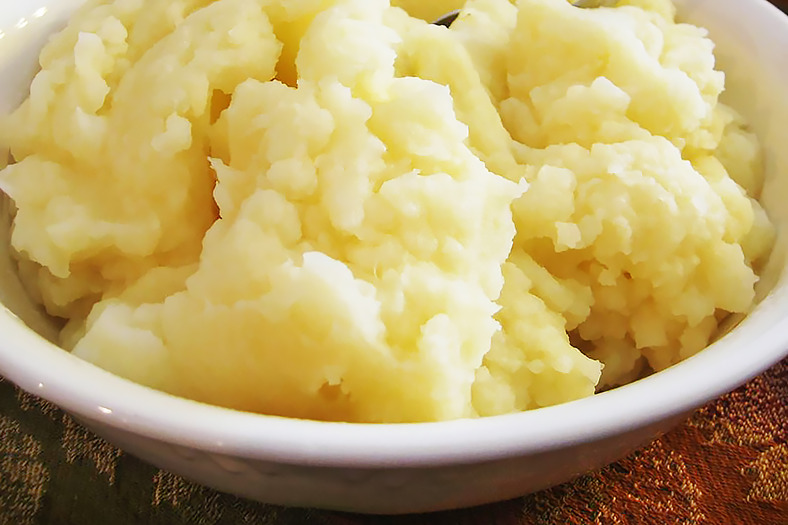

Instant Pot Mashed Potatoes
Make the best mashed potatoes you've ever tasted with this quick and easy recipe. The cream cheese makes them extra velvety, a trick I picked up from my brother Mike.
Recipe by Victor Varbanov, credits to allrecipes.com

- Prep: 10 mins
- Cook: 20 mins
- Additional: 10 mins
- Total: 40 mins
- Servings: 6
Ingredients
- 6 russet potatoes, peeled and cut into chunks
- ¼ cup cream cheese
- 1 tablespoon cream cheese
- ¼ cup milk
- salt and ground black pepper to taste
Steps
- Step
Place a steamer inside a multi-functional pressure cooker (such as Instant Pot®). Add 1 cup water to the pot. Place potato chunks into the steamer. Close and lock the lid. Select Rice function and set timer for 10 minutes. Allow 10 to 15 minutes for pressure to build.
- Step
Release pressure using the natural-release method according to manufacturer's instructions, 10 to 40 minutes. Unlock and remove lid. Add 1/4 cup plus 1 tablespoon cream cheese and milk to the pot and mash using an electric hand mixer or a potato masher. Season with salt and pepper.